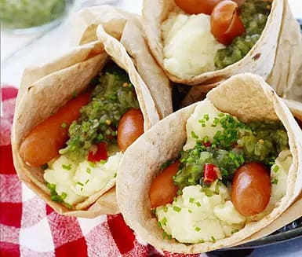

Bread Roll

About the bread roll
Classic Swedish kiosk dish. Weird but surprisingly good tasting.
Ingredients
Serves: 4
- 4 portions of instant mashed potatoes
- 1 small onion
- Bay leaves
- 5 black peppercorns
- 8 hot dogs
- 4 pieces of soft flat bread
- mustard
- ketchup
- pickles
Directions:
- Cook your mashed potatoes.
- Peel and slice the onion.
- Boil water, onion, bay leaves and peppercorns.
- Let simmer for a couple of minutes.
- Add hot dogs and heat them at low heat.
- Add all the ingrediens to bread. Roll or fold them together.
Try to enjoy as much as you can.